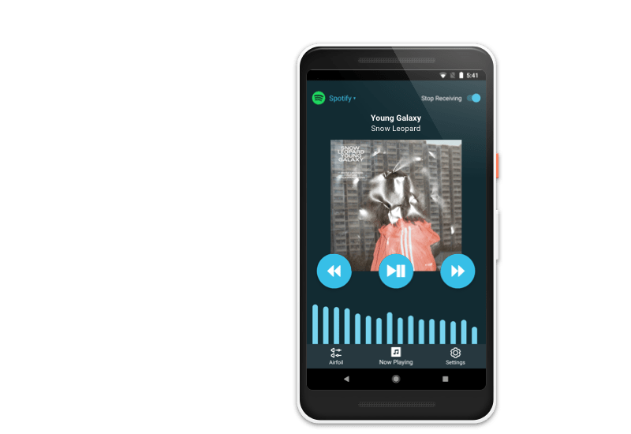
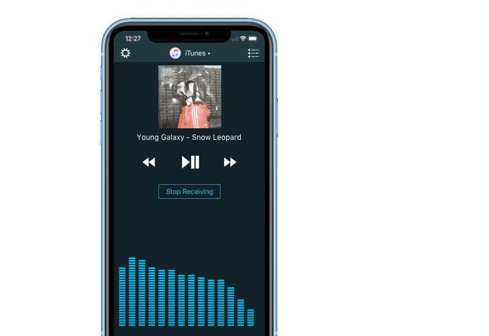
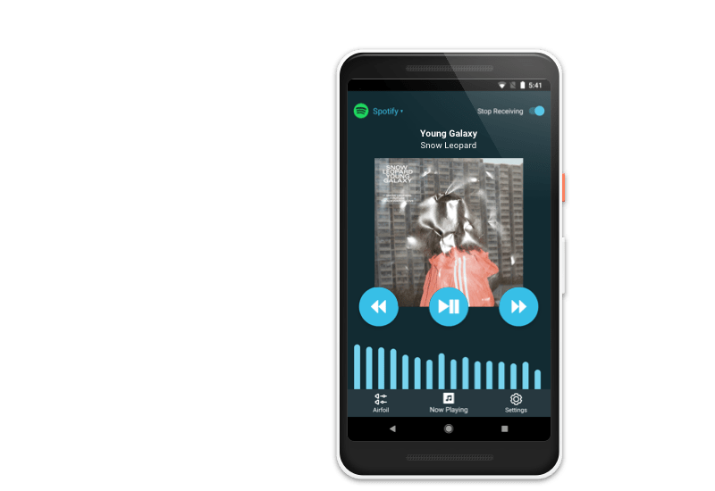
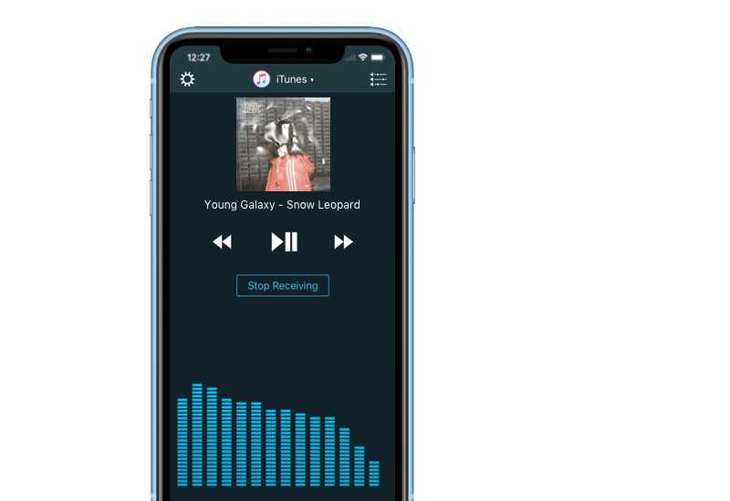

Other Platforms, Too
Airfoil Satellite is also available on other platforms, including Windows,
iOS, and Android, so you can receive audio and control Airfoil from all
your devices. Visit our site for more details.